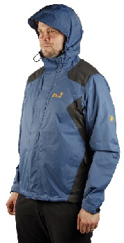
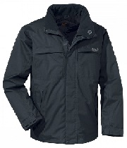
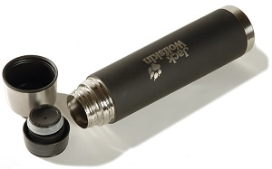
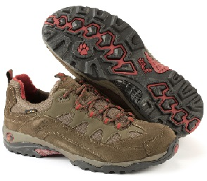

JACK WOLFSKIN创立于1981年，总部位于德国的伊德斯坦因，是德国第一大户外运动用品品牌，也是欧洲户外市场上最重要的品牌之一。作为德国户外第一品牌，Jack Wolfskin自1981年以来，以独特的设计、上乘的品质，享誉欧洲。  Jack Wolfskin相信户外运动应该是一种乐趣，户外爱好者使用装备时能时刻感到“At Home Outdoors”。2007年，Jack Wolfskin计划在10月份选择性地引进一些产品系列进入中国市场，像帐篷、背包、服装等。 Jack Wolfskin公司亚洲区总监Tobias Tennstedt介绍，Jack Wolfskin户外产品有滑雪系列、徒步系列（长途徒步、城市休闲）、登山系列。其他产品还有手套、帽子、围巾等，服装同时兼有时尚性。比较重要的产品旅行系列， 具备防紫外线、防脏的功效，而另一种防蚊虫设计，则是非常神奇的设计。Jack Wolfskin进入中国市场发展不仅代理商渠道，同时也非常重视商场的推销路线，计划先开一些示范店。同时，Tobias Tennstedt表示，Jack Wolfsin在德国是中高端价格，在中国市场会有一些特殊的产品系列，但不会用-格路线进入中国市场。
Jack Wolfskin的总公司位于德国陶努斯地区(Taunus)伊德斯坦因(Idstein)。作为欧洲户外用品市场上的主要品牌，  和德国运动用品零售行业最大的分销商，Jack Wolfskin的成功依靠的不仅是卓越的创新能力，基于品质和顾客需求的产品理念，还有市场领先的产品线和分销策略，并且包括在品牌形象上的持续投资。
在户外运动爱好者中建立了较高的品牌认知度后，Jack Wolfskin开始不断发掘新的潜在顾客：  例如，喜欢户外感觉的，在任何天气下都喜欢外出，但迄今尚未经常使用户外用品的人士。Jack Wolfskin每一件产品的基本原理就是完美结合最佳的功能性和最高的舒适度。我们坚信，户外运动应该是充满乐趣的， 产品应当帮助使用者获得舒适的户外体验。整个产品线包括为户外运动、旅游和休闲专门设计的功能性服装，用具以及鞋品，分为“户外登山”，“旅行远足”，“都市户外”，“休闲野趣”等系列。
全球销售网络，在许多户外用品专门店，运动用品商店，和Jack Wolfskin的特许经营店内都可购买到我们的产品。  Jack Wolfskin拥有117间店铺，是德国运动零售市场上最大的品牌公司。在整个德国，与2,400家零售商店建立了合作关系。其中包括，117家Jack Wolfskin代营店铺，71家伙伴关系的店中店， 大约500个“特许经销商”，以及另外超过1700家的零售商店。在其他欧洲国家的大约1,000家商店里，也可购买到Jack Wolfskin的产品。拥有32家店铺的日本是次于德国的第二大市场，在那里，Jack Wolfskin签订了非常成功的特许协议。